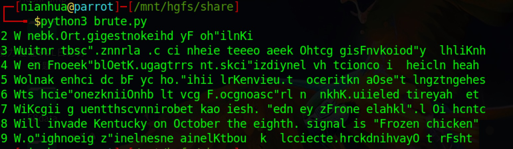

栅栏密码
必读
上节中的密码棒密码其实也是栅栏密码的一种
栅栏密码可分为N型和V型两种
栅栏密码简介¶
所谓栅栏密码，就是将要加密的明文分为N个一组，再从每组的选出一个字母连起来，形成一段无规律的密文。
栅栏密码并非一种强的加密法，其加密原理限制了密钥的最高数量不可能超过明文字母数，而实际加密时密钥数目更少，因此有些密码分析员甚至能用手直接解出明文。
栅栏密码分类¶
栅栏密码可以分为两类，第一种是N型栅栏密码（加密方式源自百度百科）、第二种是V型栅栏密码（加密方式源自维基百科）。
N型栅栏密码¶
使用密钥8（栅栏的栏数）加密一下明文1234567891234567891234567891234567891
1.......9.......8.......7.......6.......5.............................. .2.......1.......9.......8.......7.......6............................. ..3.......2.......1.......9.......8.......7............................ ...4.......3.......2.......1.......9.......8........................... ....5.......4.......3.......2.......1.......9.......................... .....6.......5.......4.......3.......2.......1......................... ......7.......6.......5.......4.......3................................ .......8.......7.......6.......5.......4...............................
首先画出8栏表格，明文由上至下顺序写上，当到达最低部时，再回到第一栏重新开始，一直重复直至整篇明文写完为止。
横向读取表格即为密文：1987652198763219874321985432196543217654387654。
V型栅栏密码¶
使用密钥8（栅栏的栏数）加密一下明文Will invade Kentucky on October the eighth# signal is Frozen chicken'#
W.............n.............b.............#.............r.............# .i...........e.t...........o.e...........h. ...........F.o...........'. ..l.........K...u.........t...r.........t...s.........'...z.........n.. ...l....... .....c.......c..... .......h.....i....... .....e.......e... .... .....e.......k.....O.......t.....g.......g.....s.......n.....k.... .....i...d.........y... .........h...i.........n...i......... ...c..... ......n.a........... .n...........e.e...........a. ...........c.i...... .......v.............o............. .............l.............h.......
横向读取表格即为密文：Wnb#r#ietoehFo'lkutrts'znl cc hi ee ekOtggsnkidy hini cna neea civo lh。
栅栏密码的程序实现¶
提示
请将该文件存储为railfence.py，后文引用均指该文件
###
### Running in python3
### FileName:railfence.py
### Date:2018-08-07
### Time:12:33 GMT
### Author:nianhua
###
from math import *
class Railfence:
def Nencipher(self,plaintext,key):
ciphertext = ''
for j in range(key):
for i in range(len(plaintext)//key+1):
try:
ciphertext += plaintext[i*key+j:i*key+j+1]
except:
pass
return ciphertext
def Ndecipher(self,ciphertext,key):
plaintext = []
plainstr = ''
column = len(ciphertext)//key
remainder = len(ciphertext)%key
for i in range(key):
if i < remainder:
plaintext.append(ciphertext[:column+1])
ciphertext = ciphertext[column+1:]
else:
plaintext.append(ciphertext[:column])
ciphertext = ciphertext[column:]
for i in range(column+1):
for j in range(key):
try:
plainstr += plaintext[j][i]
except:
pass
return plainstr
def Vencipher(self,plaintext,key):
ciphertext = ''
v = ceil(len(plaintext)/(2*(key-1)))
for i in range(key):
for j in range(v):
try:
ciphertext += plaintext[(j*(key-1)*2) + i]
if(i != 0 and i != (key-1)):
ciphertext += plaintext[(j*(key-1)*2) + (((key-1)*2)-i)]
except:
pass
return ciphertext
def Vdecipher(self,ciphertext,key):
cipherarray = []
plaintext = ''
v = ceil(len(ciphertext)/(2*(key-1)))
rv = len(ciphertext)//(2*(key-1))
re = len(ciphertext)%(2*(key-1))
maxlen = 0
cipherarray.append(ciphertext[:v])
ciphertext = ciphertext[v:]
if re <= (key-1):
for i in range(re-1):
cipherarray.append(ciphertext[:2*rv+1])
ciphertext = ciphertext[2*rv+1:]
for i in range(key-(re+1)):
cipherarray.append(ciphertext[:2*rv])
ciphertext = ciphertext[2*rv:]
cipherarray.append(ciphertext)
ciphertext = ''
else:
for i in range(2*key-re-2):
cipherarray.append(ciphertext[:2*rv+1])
ciphertext = ciphertext[2*rv+1:]
for i in range(re-key):
cipherarray.append(ciphertext[:(2*rv+2)])
ciphertext = ciphertext[(2*rv+2):]
cipherarray.append(ciphertext)
ciphertext = ''
cipherarray = [i for i in cipherarray if i != '']
for i in cipherarray:
if(len(i)>maxlen):
maxlen = len(i)
for i in range(ceil(maxlen/2)):
for j in range(len(cipherarray)):
plaintext += cipherarray[j][:1]
cipherarray[j] = cipherarray[j][1:]
for j in range(len(cipherarray)-2,0,-1):
plaintext += cipherarray[j][:1]
cipherarray[j] = cipherarray[j][1:]
return plaintext
def main():
newobj = Railfence()
print(newobj.Vdecipher(newobj.Vencipher('Will invade Kentucky on October the eighth. signal is "Frozen chicken"',8),8))
if "__main__" == __name__ :
main()
栅栏密码的破解¶
前提
栅栏密码的密钥空间必定小于密文长度的½（因为如果密钥大于密文长度的½，则结束部分的明文未被加密）。
从上面的前提我们可以知道栅栏密码的密钥空间较小，因此可以使用暴力破解的方式进行攻击。
首先我们编写两种栅栏密码的加密解密代码。
对V型加密后的密文Wnb.r.ietoeh Fo"lKutrts"znl cc hi ee ekOtggsnkidy hini cna neea civo lh进行暴力破解
from railfence import *
newobj = Railfence()
string = 'Wnb.r.ietoeh Fo"lKutrts"znl cc hi ee ekOtggsnkidy hini cna neea civo lh'
for i in range(2,10):
print(i,newobj.Vdecipher(string,i))
运行程序，查看效果：

我们可以看到第八行是明显是有意义的明文，因此密钥为8
问题
如果密文由100位字母组成，那我们至少需要尝试50个密钥？
栅栏密码小结¶
结论
栅栏密码是一个非常容易破解的密码，密码分析者只需要尝试几个密钥即可找到正确的明文。如果您知道某些明文，或者可以猜出一些明文，那么将更容易找到密钥。
换位密码的一个特点是字符的频率分布与自然文本的频率分布相同（因为没有进行替换，它只是混合的顺序）。换句话说，它应该看起来像这样：